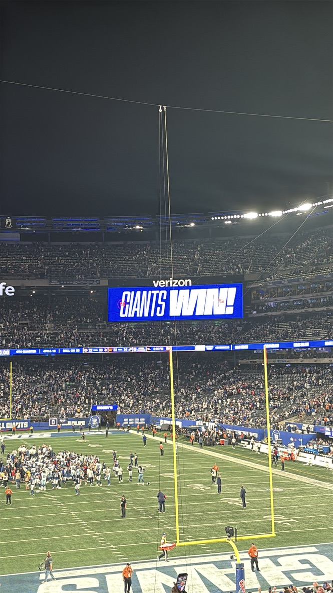

Tennessee Titans
7
FINAL
New York Giants
12
Win
Sunday, September 27, 2026 · 1:00 PM ET · MetLife Stadium, East Rutherford, NJ
Record: 2-1
Game Recap
Not pretty, but a win. In Jameis Winston's first start, on a stormy day at MetLife, the Giants never reached the end zone. However kicker Dominic Zvada went a perfect 4-for-4 on field goals. The Giants defense held firm, keeping Tennessee to just seven points and forcing two turnovers, including an interception by Jevon Holland in the endzone to seal the game with under 20 seconds to go.

Score by Quarter
| Team | Q1 | Q2 | Q3 | Q4 | Final |
|---|---|---|---|---|---|
| Titans | 0 | 0 | 0 | 7 | 7 |
| Giants | 3 | 6 | 3 | 0 | 12 |
Giants Stat Leaders
Passing
Jameis Winston
118 yards
Rushing
Cam Skattebo
60 yards
Receiving
Cam Skattebo
40 yards
Team Stats
| Stat | Giants | Tennessee Titans |
|---|---|---|
| Total yards | 238 | 262 |
| Passing yards (net) | 100 | 181 |
| Rushing yards | 138 | 81 |
| Completions / attempts | 14/22 | 23/36 |
| Passing TD / INT | 0 / 0 | 1 / 1 |
| First downs | 16 | 17 |
| Turnovers | 0 | 2 |
| Sacks allowed | 3 | 0 |
| Penalties - yards | 10 - 88 | 7 - 63 |
| Time of possession | 34:26 | 25:34 |
Scoring Summary
- Q1 - Dominik Zvada 39-yard field goal (NYG 3-0)
- Q2 - Dominik Zvada 27-yard field goal (NYG 6-0)
- Q2 - Dominik Zvada 39-yard field goal (NYG 9-0)
- Q3 - Dominik Zvada 30-yard field goal (NYG 12-0)
- Q4 - W. Robinson 4-yard TD catch from Cam Ward (NYG 12-7)
Watch the Highlights
Catch the best plays from this game on YouTube, or browse the official team video page.
Watch on YouTube Giants.com Video